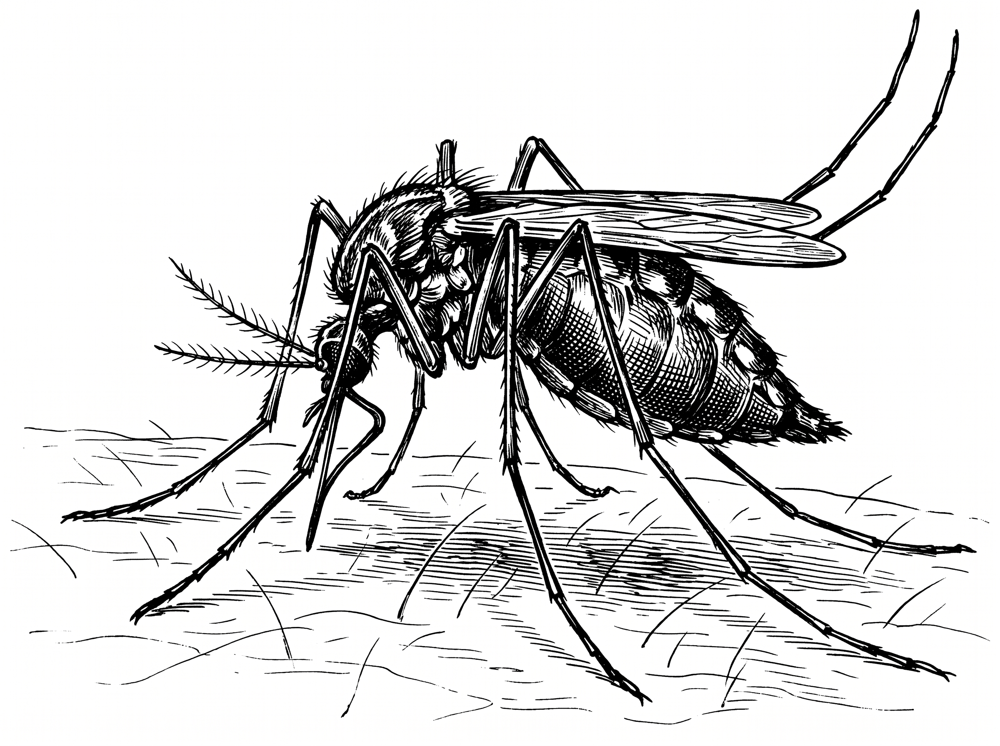
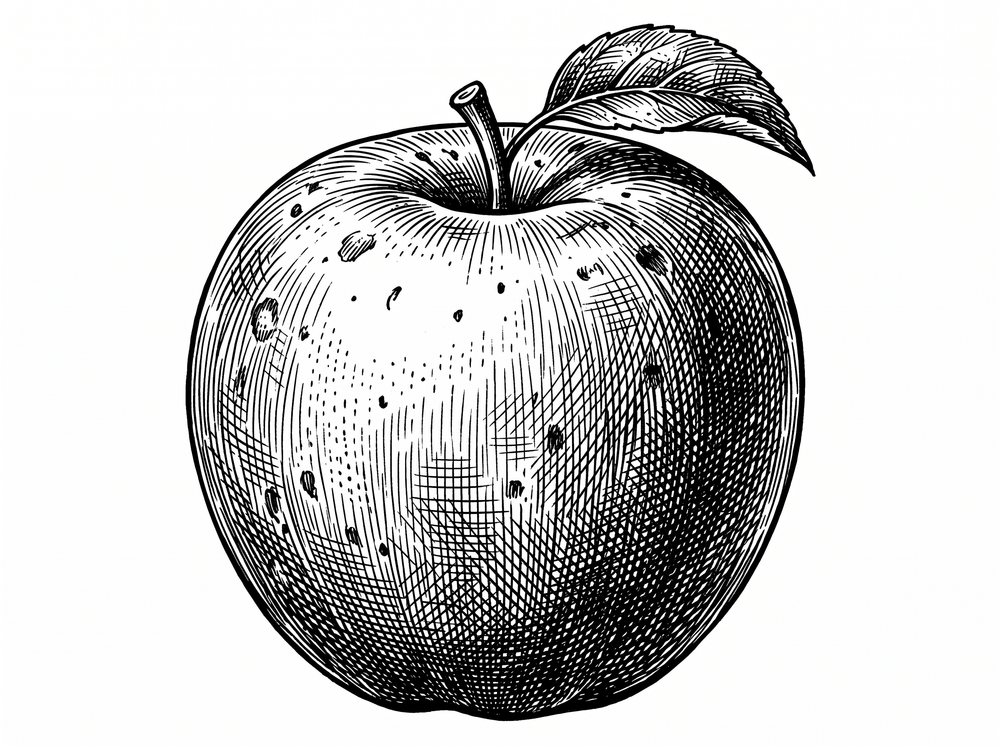
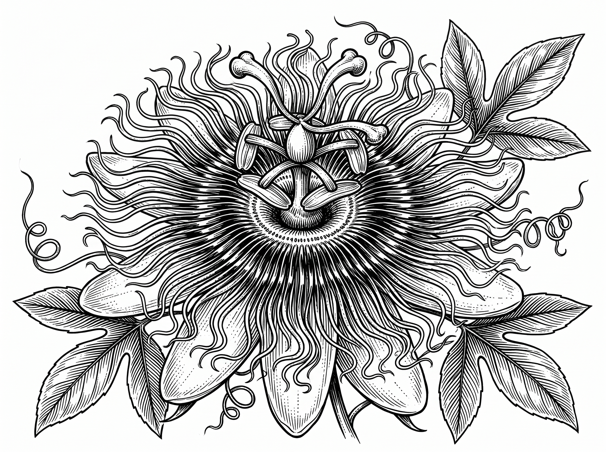
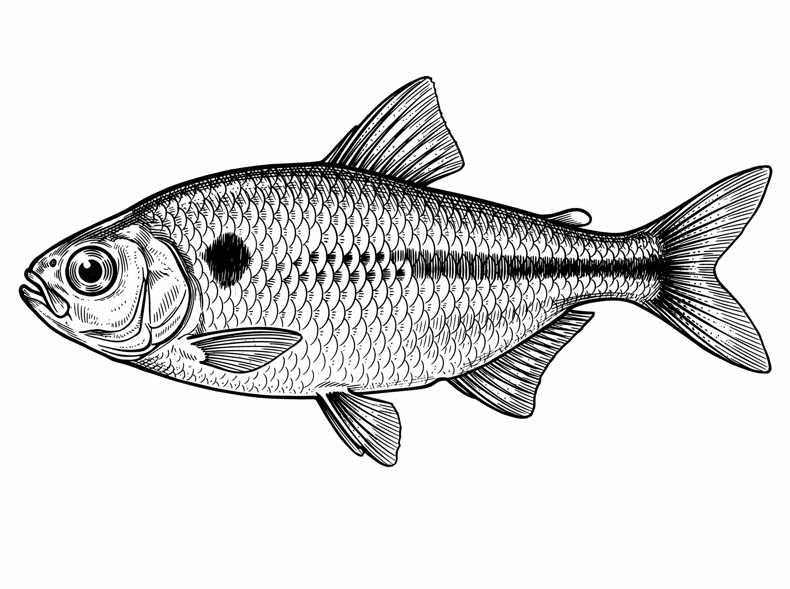
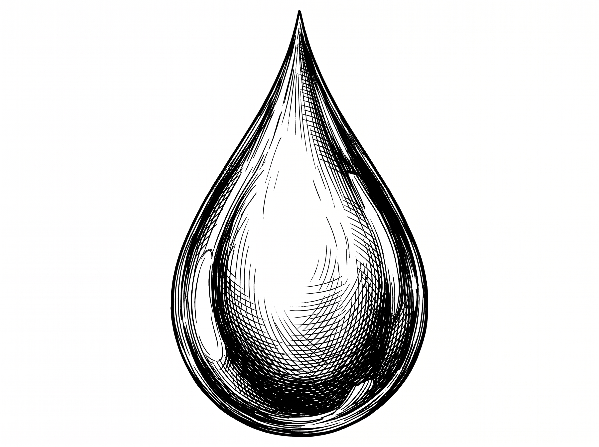

O morcego é o único mamífero do planeta capaz de realizar voo verdadeiro (sustentado e ativo). Pertencentes à ordem Chiroptera (palavra de origem grega que significa "mão alada"), eles representam cerca de 20% de todas as espécies de mamíferos conhecidas no mundo, com mais de 1.400 espécies catalogadas.




